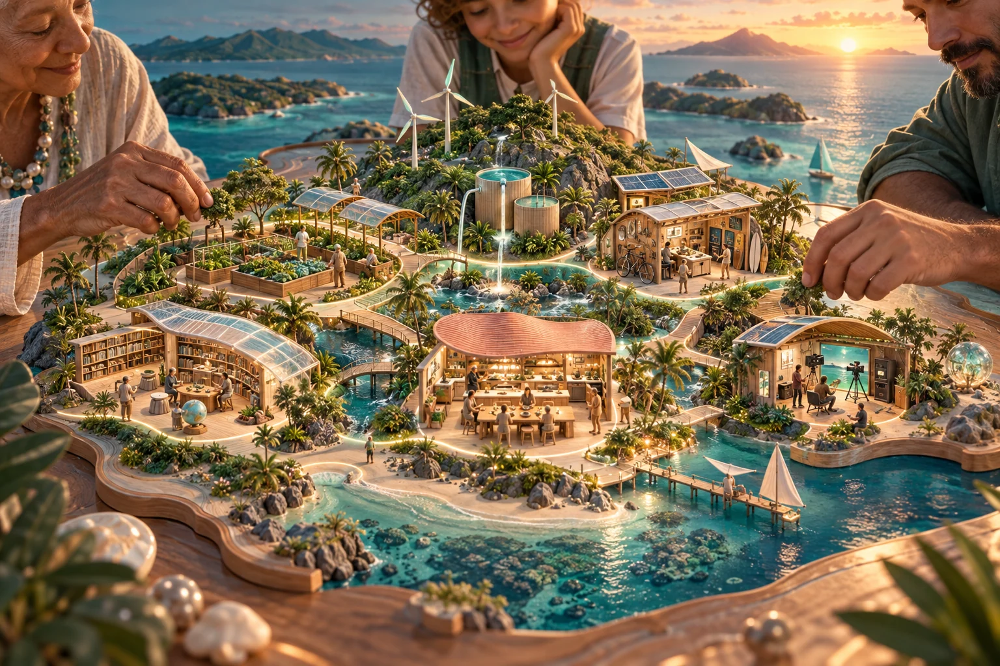
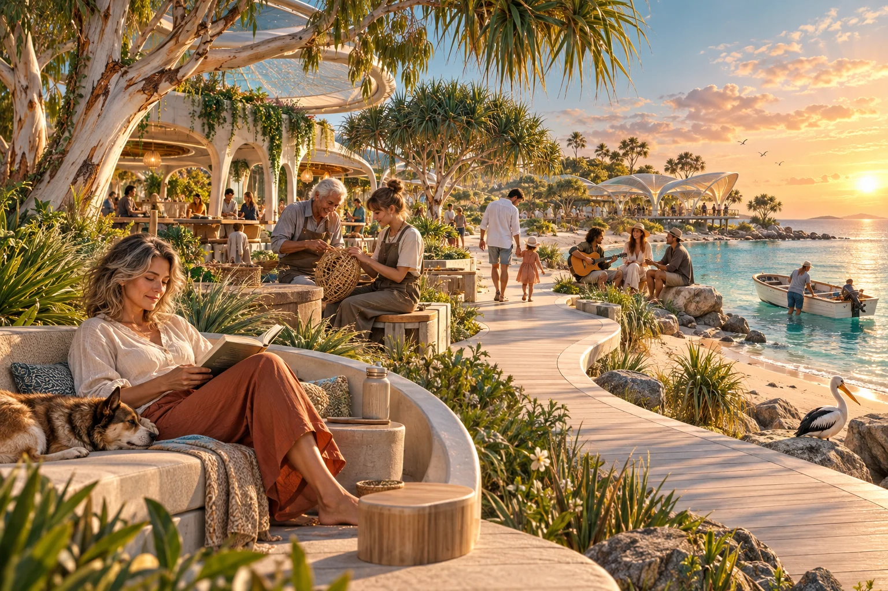
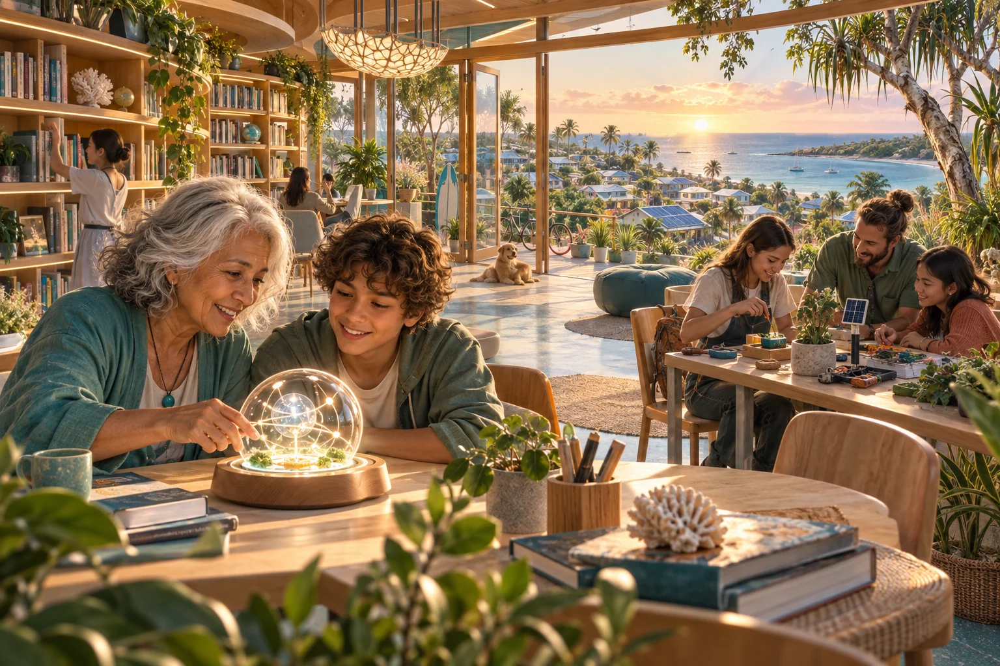
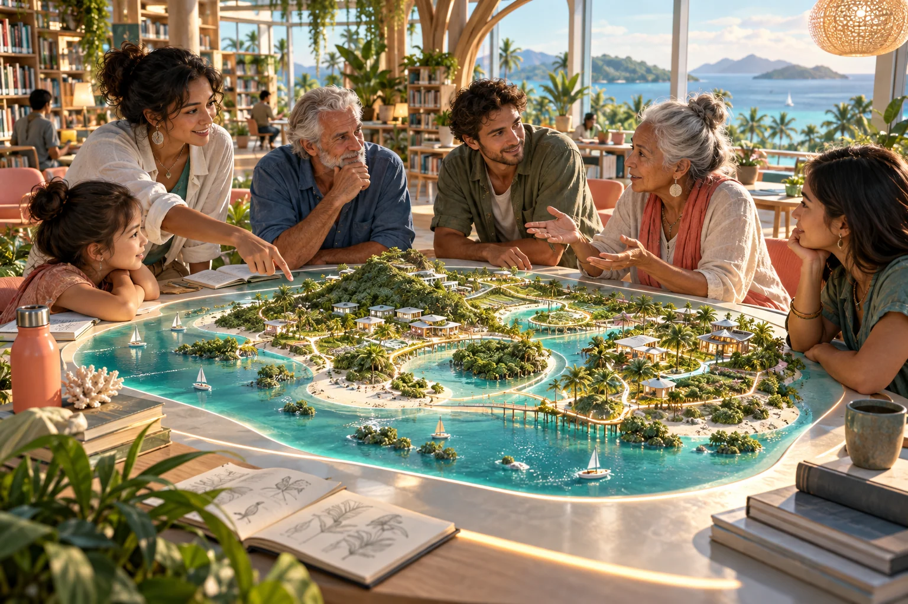
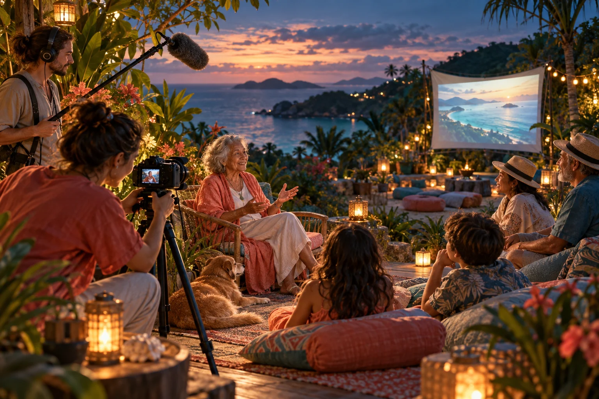
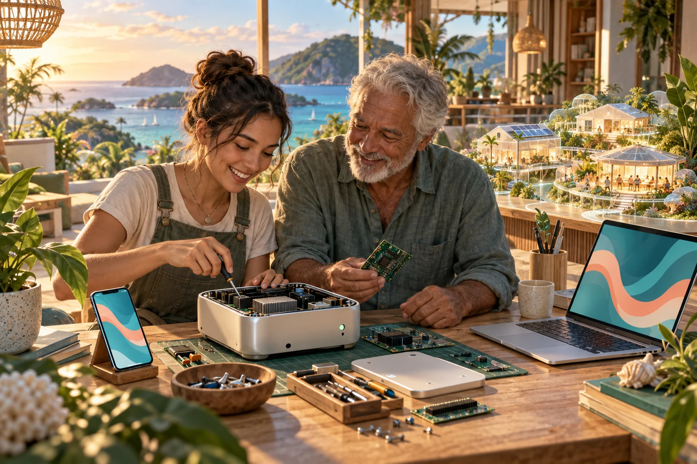

Food and everyday life · Public planning site and browser tools
Shared Table
Explore food circles, growing, pantry planning and gatherings as a practical doorway into contribution and friendship.
Explore project ↗
Explore the public projects surrounding C-Hour. Each has its own purpose, stage of development and invitation.
These are related public workbenches, prototypes and proposals. A published project page does not mean a local service or partnership is operating.
Food and everyday life · Public planning site and browser tools
Explore food circles, growing, pantry planning and gatherings as a practical doorway into contribution and friendship.
Explore project ↗Food and everyday life · Public concept report; no connected AI service
Explore Garden Mate, Kitchen Mate, Fermentation Mate and Event Mate as proposed helpers from growing and cooking to preservation and gatherings.
Explore project ↗Food and everyday life · Public proposal and research gateway
Connect everyday wellbeing, local cooperative possibilities and personal data stewardship across Oceania. Clinics, facilities and specialist research remain proposals.
Explore project ↗Contribution and participation · Public project ledger and concept pathway
See how projects, contribution and support can be connected. Read older C-hour material alongside the current non-monetary definition.
Explore project ↗Contribution and participation · Public event catalogue and planning prototype
Find source-linked events and explore tools for planning, gatherings, stories and aftercare. A listing or plan does not itself confirm a host or permission.
Explore project ↗Contribution and participation · Public prototype with sample publisher information
Explore how local notices and screens could help people find activities while publishers retain their own identity. Its sample catalogue is not an enrolled network.
Explore project ↗
Personal intelligence and place · Developing browser-local application
Explore the current Aura interface for personal knowledge, relationships, interests, learning and matrix views. The complete C-hour agent and Sensorium journey remains proposed.
Explore project ↗Personal intelligence and place · Public explainer distinguishing built and proposed work
Follow the path from phone scanning to a possible community digital twin, including plain-language explanations of the Sensorium and local shared computing.
Explore project ↗Personal intelligence and place · Working browser prototype with limited simulations
Explore an island map, existing panorama records and an illustrative transport exercise. It has no live observation feed and is not a complete reconstructed island.
Explore project ↗Shared capability · Public proposal and browser-local planning tools
Explore one local computing node in Dunwich, useful workloads, learning, cultural collaboration and the people who would operate it. The proposed rack is not installed infrastructure.
Explore project ↗Shared capability · Public workbench for a proposed cooperative
Explore shared employment, learning, mentoring, equipment and administration around local projects. Ready S.E.T. means Sustainable Employment and Training; the cooperative is proposed.
Explore project ↗Shared capability · Public workbench for site and service proposals
Explore 7 Mile, Ballow Road, Claytons Road and connected ideas for living, care, culture, making and research. Site access, partnerships and decisions remain with the relevant people.
Explore project ↗Shared capability · Public options atlas and research workbench
Explore energy generation, storage, heat, water and infrastructure questions that could support a more capable island community. The atlas is not an engineered installation plan.
Explore project ↗
Work, ownership and learning · Public proposal with browser-local planning tools
Explore willing business succession, shared ownership, Try Everything Once, Intermittent Retirement, Universal Intelligence and more choice across a lifetime.
Explore project ↗
Work, ownership and learning · Public proposal with fictional AI mentor concepts
Explore women’s enterprise leadership, mentorship and proposed access to backing. AI Queen profiles are creative mentor concepts, and the site does not operate a live investment fund.
Explore project ↗Work, ownership and learning · Public concept and research doorway
Explore shared assets, mutual care, Indigenous data sovereignty and community wealth. Financial arrangements have their own development path and do not back a C-hour balance.
Explore project ↗Work, ownership and learning · Public funding research workbench
Connect a local project with possible funding and partner pathways. Source dates, eligibility and readiness need checking for the particular activity.
Explore project ↗
Civic learning across Oceania · Public civic prototype; proposed movement
Explore civic questions, public documents, simulation and constitutional literacy. Participation in C-hours does not require support for P4A or any political party.
Explore project ↗Civic learning across Oceania · Public civic idea lab
Explore how civic learning and locally shaped cooperation might connect across Oceania. Older C-hour mechanisms are read through the current planning edition.
Explore project ↗Civic learning across Oceania · Invitational public lab; no representative authority
Explore source-led discussions of Indigenous data sovereignty, computing and reciprocity. The workbench does not speak for a nation or grant permission on its behalf.
Explore project ↗Civic learning across Oceania · Preserved public concept; association remains unregistered
Explore the Global Association for Joyful Responsible Abundance on Earth as a possible network of locally shaped projects and associations, with a clear distinction between its archive and current intent.
Explore project ↗
Stories and creative participation · Public collaboration proposal
Connect stories, skills, screens, local information and practical media activities. The website is an invitation to collaborate, not a confirmed island-wide organisation.
Explore project ↗Stories and creative participation · Public show concept and browser-local production tools
Explore conversations about values and experience, with guests choosing their own animal and meaning. Production tools help plan and record a conversation without submitting private notes.
Explore project ↗Stories and creative participation · Working browser-local planning toolkit
Keep research, source trails, interview preparation, scene evidence and screening notes organised. A useful starting point for a community story made with its participants.
Explore project ↗
Stories and creative participation · Public documentary treatment and planning site
Follow a long-horizon film ambition connecting place, materials, possible futures and seven-generation civilisation building. Its imagined infrastructure is part of the treatment.
Explore project ↗Stories and creative participation · Public production guide; editor integration needs testing
Explore reusable editing instructions, visual bundles and AI-assisted production. The guide identifies which proposed controls still need testing on the editing computer.
Explore project ↗Stories and creative participation · Development pipeline and public project documentation
Explore a model-agnostic path from song ideas to lyric videos, comics and other creative outputs, with human direction and review throughout the production process.
Explore project ↗Explore the wider network · Working public project map
Find the wider collection and the evidenced relationships between projects. Use it for discovery, then check the destination project’s own status and sources.
Explore project ↗Explore the wider network · Public source and repository research index
Follow project sources and relationships when an idea needs deeper investigation. The library helps locate evidence; it does not independently validate each claim.
Explore project ↗